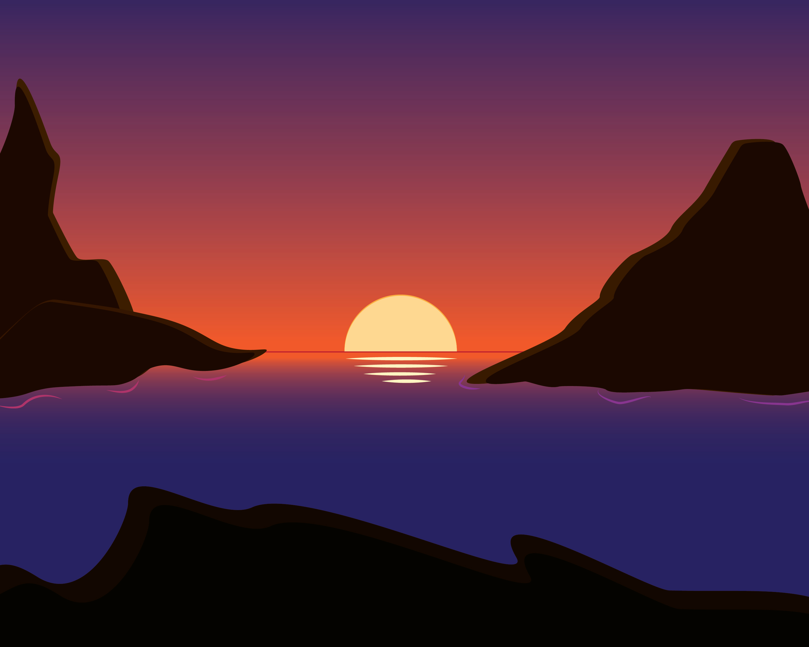
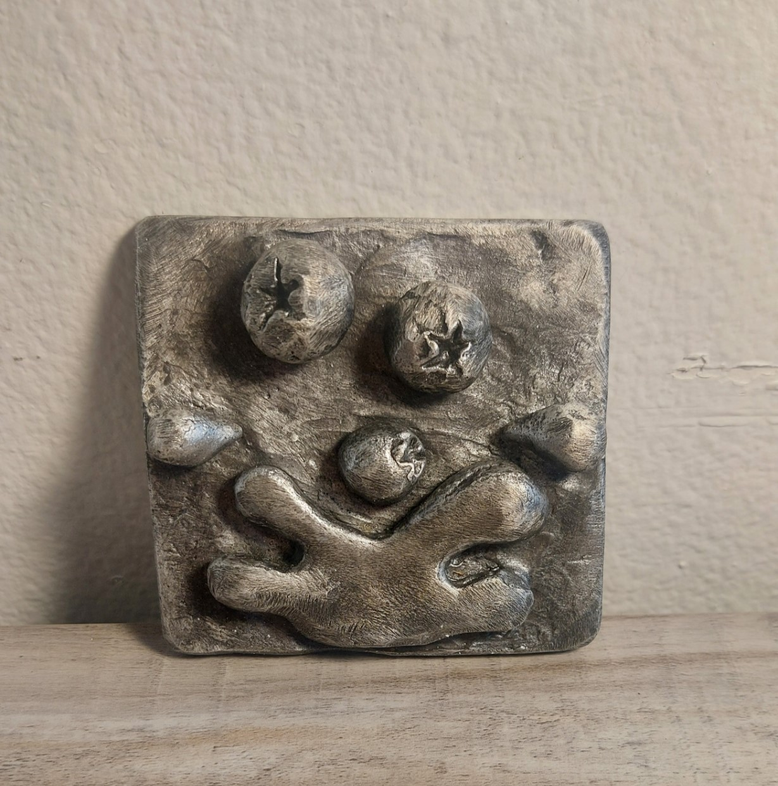

Sunset Islands
Using Adobe Illustrator and vector graphics, I created a simple sunset scenery, aiming for the illusion of a three-Dimentional space. This is one of two, the other being much more of a two-Dimentional look and feel, as the project called for similar images, but one more 3three-Dimentional than the previous.
Notebooks
Given the task of black-and-white photography, the darkness of the notebooks contrasts quite nicely compared to the light to the right of the image.

Blueberry Logo
Using Wax and casting, here we have a simplistic logo for potentially some sort of made-up business or media. One of the ideas that struck me was some sort of farming business, so I went with blueberries splashing out of some water as a logo.
(Site may recieve updates and changes in the future)